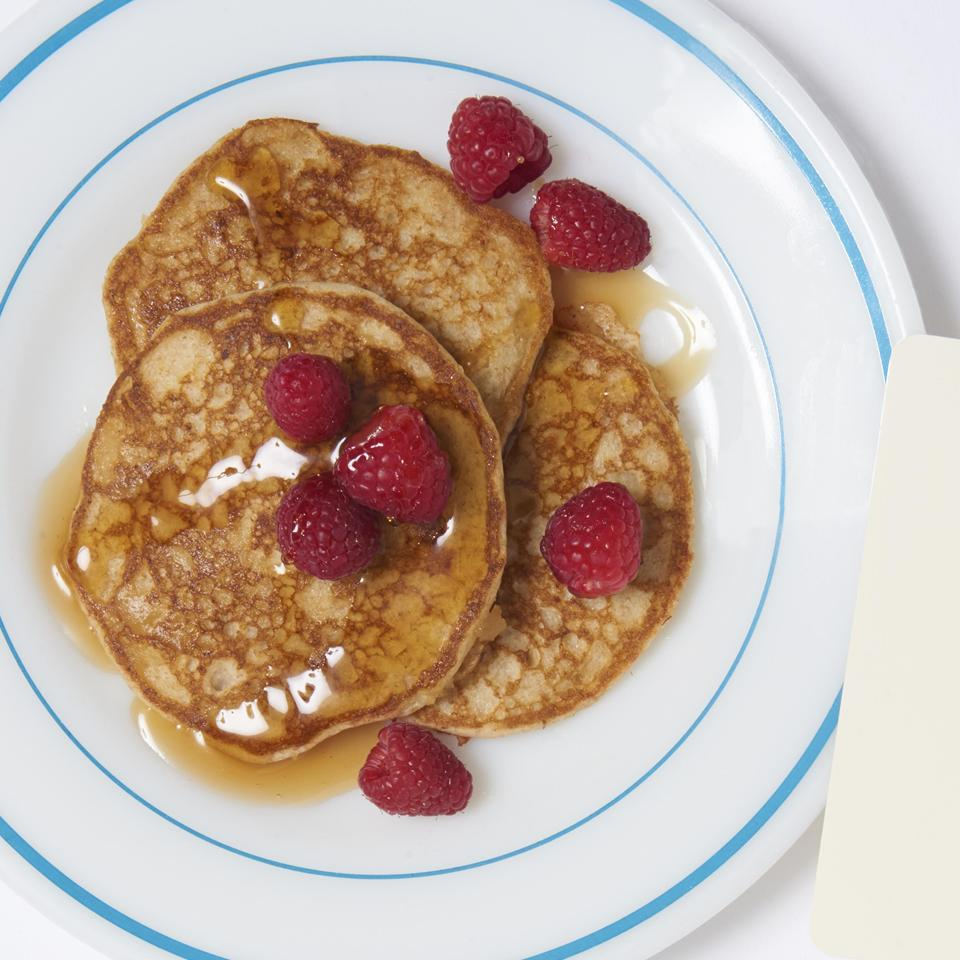

Pancakes

Description
"Whole Wheat Pancakes" sourced from allrecipes.
Ingredients
- 1 cup whole wheat flour
- ⅔ cup all-purpose flour
- ⅓ cup wheat germ
- 1½ teaspoons baking powder
- ½ teaspoon baking soda
- 2 tablespoons brown sugar
- 1 teaspoon salt
- 5⅓ tablespoons unsalted butter
- 2½ cups buttermilk
- 2 eggs, beaten
- 3 tablespoons unsalted butter
Steps
- In a food processor or in a large bowl, combine the whole wheat flour, white flour, wheat germ or oats,
baking powder, baking soda, brown sugar, and salt.
- Cut the butter into small pieces with a knife, and add the butter to the flour-mixture. Mix until the
mixture has a sand-like consistency.
- Make a well in the center of the flour-butter mixture, and add the buttermilk and eggs. Stir until the
liquids are fully incorporated.
- Heat a frying pan over medium heat and grease the surface with 1 tablespoon of butter or oil. Ladle the
batter onto the surface to form 4 inch pancakes. Once bubbles form on the top of the pancakes, flip them
over, and cook them on the other side for about 2 minutes.
Home